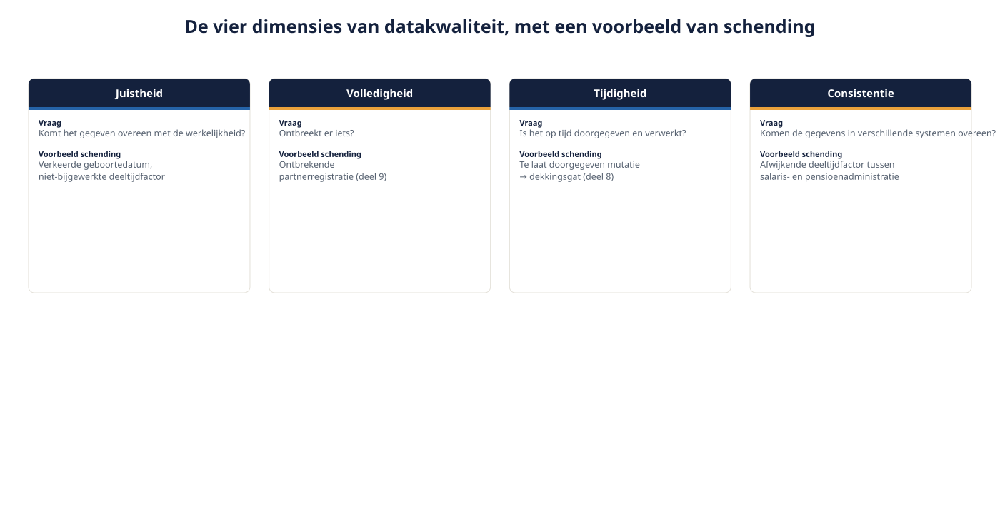
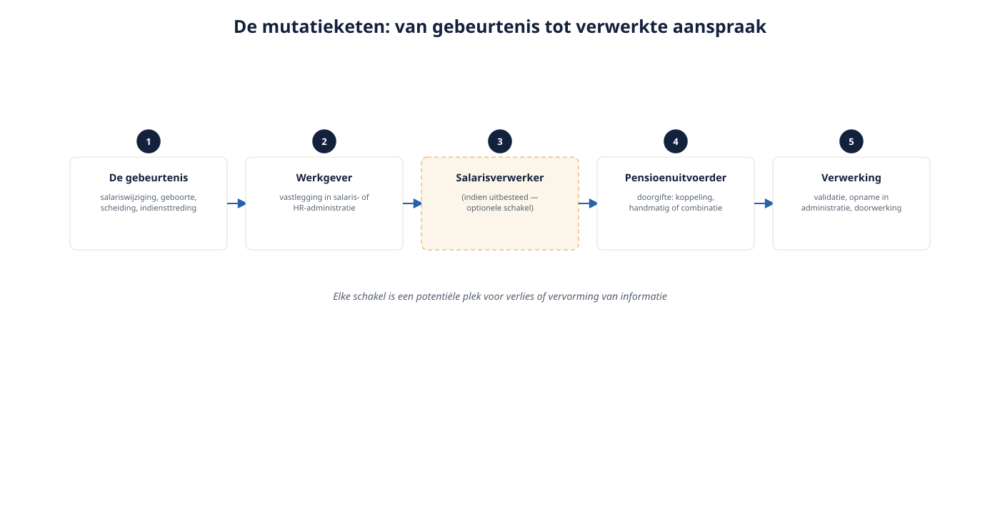

Deel 19 — Data en mutatieprocessen
Niveau 2 · Uitvoering en advies · Deelnemersreader
19.1 Leerdoelen
Na dit deel kun je:
- de vier dimensies van datakwaliteit in de pensioenadministratie benoemen en toepassen;
- de mutatieketen van werkgever tot uitvoerder in kaart brengen, inclusief tussenpartijen;
- de meest voorkomende faalpunten in die keten herkennen aan de hand van eerdere delen van deze cursus;
- verantwoordelijkheden tussen werkgever, salarisverwerker, adviseur en uitvoerder correct toedelen;
- een datakwaliteitscontrole ontwerpen voor de implementatiefase van een transitie;
- de datastroom van Van Doorn Techniek doorlichten op kwetsbare punten.
19.2 Waarom dit deel het sluitstuk is van “hoe het werkt”
Door de hele cursus heen dook hetzelfde thema steeds weer op, zonder ooit een eigen deel te krijgen: correcte data als voorwaarde voor bijna alles. Deel 9 signaleerde dat de pensioenadministratie zo goed is als de salarisadministratie. Deel 14 plaatste datakwaliteit al in de inventarisatiefase. Deel 17 stelde vast dat correcte communicatie begint bij correcte data. Dit deel behandelt het onderwerp eindelijk in volle breedte: niet als bijzaak bij elk ander thema, maar als eigen vakgebied met een eigen discipline.
19.3 Vier dimensies van datakwaliteit
Gebruik deze vier dimensies bij elke beoordeling van een gegevensstroom of -bestand.
1. Juistheid. Komt het gegeven overeen met de werkelijkheid? Een verkeerd ingevoerd salaris, een fout in de geboortedatum, een niet-bijgewerkte deeltijdfactor — allemaal schendingen van juistheid.
2. Volledigheid. Ontbreekt er iets? Denk aan de partnerregistratie uit deel 9 — geen fout gegeven, maar een ontbrekend gegeven, met precies zo grote gevolgen.
3. Tijdigheid. Is het gegeven op tijd doorgegeven en verwerkt? Deel 8 liet zien dat een te laat doorgegeven mutatie een dekkingsgat kan veroorzaken in de periode tussen de gebeurtenis en de verwerking.
4. Consistentie. Komen dezelfde gegevens in verschillende systemen en documenten overeen? Bij Van Doorn: staat de deeltijdfactor in de salarisadministratie hetzelfde als in de pensioenadministratie? Inconsistentie tussen bronnen is vaak moeilijker te detecteren dan een enkele fout, omdat geen van beide bronnen op zichzelf “fout” hoeft te lijken.

Een goede gewoonte: bij elk datakwaliteitsprobleem dat je tegenkomt, benoem expliciet welke van de vier dimensies is geschonden. Dat voorkomt dat “datakwaliteit” een vaag containerbegrip wordt en maakt een probleem meteen gerichter oplosbaar.
19.4 De mutatieketen

Een pensioenmutatie legt typisch de volgende route af:
- De gebeurtenis — een salariswijziging, indiensttreding, verandering van arbeidsduur, een geboorte, een scheiding (deel 9).
- Vastlegging bij de werkgever — meestal in de salarisadministratie, soms in een apart HR-systeem.
- Doorgifte aan de salarisverwerker (indien uitbesteed) — een tussenschakel die niet elke werkgever heeft, maar die bij uitbesteding van de loonadministratie een aparte foutbron toevoegt.
- Doorgifte aan de pensioenuitvoerder — via een geautomatiseerde koppeling, een handmatige aanlevering, of een combinatie.
- Verwerking door de uitvoerder — validatie, opname in de pensioenadministratie, doorwerking naar premie, dekking en toekomstige communicatie (deel 17).
Elke schakel is een potentiële plek voor verlies of vervorming van informatie. Hoe meer schakels, hoe groter het cumulatieve risico — niet omdat elke partij onzorgvuldig is, maar omdat elke overdracht een kans op ruis toevoegt.
De rol van de adviseur. Joost Meiland zit niet in de directe mutatieketen, maar hij is wel verantwoordelijk (deel 18, klantprofiel) voor de juistheid van de gegevens waarop zijn advies is gebaseerd. Bij de inventarisatiefase (deel 14) is hij feitelijk de eerste controlepost voor datakwaliteit in het hele transitietraject.
19.5 Faalpunten herkend uit eerdere delen
Deze cursus heeft, verspreid over eerdere delen, al een reeks concrete datafalen behandeld. Dit deel brengt ze samen als één overzicht.
| Faalpunt | Waar behandeld | Welke dimensie geschonden |
|---|---|---|
| Partner niet aangemeld bij samenwonen | Deel 9 (Jeroen en Sanne) | Volledigheid |
| Salariswijziging te laat doorgegeven | Deel 9, deel 17 (opdracht 17.7) | Tijdigheid |
| Verouderd bestand bij offerteaanvraag | Deel 14 | Juistheid, tijdigheid |
| Lifecycle-profiel niet meegenomen bij transitie | Deel 12 (opdracht 12.8) | Consistentie |
| Onopgemerkte verplichte aansluiting | Deel 4 | Juistheid (van de werkingssfeeraanname) |
| Deeltijdfactor verschillend toegepast op franchise | Deel 11 (opdracht 11.2) | Consistentie |
Deze tabel is geen nieuwe stof maar een samenvatting die laat zien: datakwaliteit is niet één van de onderwerpen van deze cursus — het is de onderstroom van bijna elk onderwerp.
19.6 Verantwoordelijkheden
Wie is waarvoor verantwoordelijk in de keten?
De werkgever is verantwoordelijk voor tijdige en juiste aanlevering van mutaties — dit volgt uit de informatieverplichtingen in de uitvoeringsovereenkomst (deel 2 en 14). Een werkgever die een salariswijziging niet doorgeeft, schendt een contractuele verplichting, niet alleen een goede gewoonte.
De salarisverwerker, indien ingeschakeld, is verantwoordelijk jegens de werkgever voor correcte verwerking van diens eigen gegevens — maar deze relatie staat los van de uitvoeringsovereenkomst tussen werkgever en pensioenuitvoerder. Een fout bij de salarisverwerker is voor de pensioenuitvoerder onzichtbaar totdat zij zich manifesteert.
De pensioenuitvoerder is verantwoordelijk voor correcte verwerking van wat wordt aangeleverd, voor validatie waar mogelijk, en — zoals in deel 17 vastgesteld — voor het kunnen onderbouwen dat de datakwaliteit toereikend is voor correcte communicatie.
De adviseur is verantwoordelijk voor de juistheid van het klantprofiel (deel 18) en voor het signaleren van datakwaliteitsrisico’s die hij bij de inventarisatie tegenkomt, ook al ligt de uitvoering van de mutatieketen zelf buiten zijn rol.
Wat hier vaak misgaat: géén van deze partijen voelt zich verantwoordelijk voor het geheel van de keten. Elke partij bewaakt haar eigen schakel, maar niemand heeft standaard het overzicht over de hele keten van gebeurtenis tot verwerkte aanspraak. Dat is precies waarom een transitie — met haar concentratie van mutaties, systeemwissels en nieuwe koppelingen — het moment is waarop keteneigenaarschap expliciet moet worden belegd, in plaats van stilzwijgend te worden verondersteld.
19.7 Datakwaliteitscontrole bij een implementatie
Terugkijkend naar het implementatieplan uit deel 15 (stap 10 van het twaalfstappenplan), hier de concrete controles die daarbij horen:
- Vergelijking oud versus nieuw bestand. Vóór de daadwerkelijke overgang: een regel-voor-regel vergelijking tussen het bestand waarop de offerte is gebaseerd (deel 14) en het bestand op het moment van daadwerkelijke aanlevering. Verschillen moeten verklaard worden, niet genegeerd.
- Steekproefcontrole op individuele dossiers. Een aantal willekeurige en een aantal risicovolle dossiers (zoals Karel, met zijn lange historie en meerdere regelingswisselingen, deel 9) handmatig doorlopen.
- Consistentiecontrole tussen systemen. Komt de deeltijdfactor, de franchise-toepassing en het lifecycle-profiel overeen tussen de oude en de nieuwe administratie?
- Validatie van bijzondere posities. De arbeidsongeschikte medewerker op het transitiemoment (deel 8), de gesloten groep onder eerbiedigende werking (deel 6) — dit zijn groepen die bij een generieke controle makkelijk over het hoofd worden gezien juist omdat zij afwijken van de hoofdregel.
- Testcommunicatie vóór verzending. Eén of enkele testcasussen door de volledige communicatieketen (deel 17) laten lopen vóórdat de definitieve transitieoverzichten naar alle deelnemers gaan.
19.8 De datastroom van Van Doorn doorgelicht
Toegepast op de casus: Van Doorn heeft geen aparte salarisverwerker (kleine onderneming, Anouk beheert de salarisadministratie zelf), wat de keten korter maakt maar Anouk ook tot een single point of failure maakt. Bij de transitie (deel 14 en 15) moet in het bijzonder worden gecontroleerd:
- Is Karels volledige historie (middelloon 1994-2010, staffel 2010-2027) correct in het nieuwe systeem vertegenwoordigd, inclusief de vraag of zijn scheiding uit 2013 (deel 9) destijds correct is verwerkt?
- Is Yasmins deeltijdfactor, als die op enig moment wijzigt, consistent doorgevoerd in zowel de premieberekening (deel 11) als een eventuele lifecycle-instelling (deel 12)?
- Zijn er medewerkers die, net als de fictieve Jeroen uit deel 9, een partner hebben die niet is aangemeld?
Deze laatste vraag is voor een adviseur of HR-medewerker zelden comfortabel om actief uit te vragen — maar het is precies het soort vraag die, onbeantwoord, tot het ernstigste soort fout in dit hele vak leidt.
19.9 Kernbegrippen
| Begrip | Betekenis |
|---|---|
| Juistheid | Het gegeven komt overeen met de werkelijkheid |
| Volledigheid | Er ontbreekt geen relevant gegeven |
| Tijdigheid | Het gegeven is op tijd doorgegeven en verwerkt |
| Consistentie | Hetzelfde gegeven komt in verschillende systemen overeen |
| Mutatieketen | De opeenvolging van partijen waarlangs een gegeven van gebeurtenis tot verwerking reist |
| Keteneigenaarschap | Expliciete verantwoordelijkheid voor de kwaliteit van de hele keten, niet alleen de eigen schakel |
19.10 Samenvatting
- Datakwaliteit kent vier dimensies: juistheid, volledigheid, tijdigheid en consistentie; elk datakwaliteitsprobleem is te herleiden tot een schending van (minstens) één ervan.
- De mutatieketen loopt van gebeurtenis via werkgever en eventueel salarisverwerker naar de uitvoerder; elke schakel voegt risico toe.
- Deze cursus heeft door alle voorgaande delen heen al een reeks concrete faalpunten laten zien; zij zijn stuk voor stuk terug te voeren op een van de vier dimensies.
- Verantwoordelijkheid is verdeeld over werkgever, salarisverwerker, uitvoerder en adviseur, maar het geheel van de keten heeft zelden een expliciete eigenaar — dat moet bij een transitie bewust worden belegd.
- Vijf concrete controles horen bij elke implementatie: bestandsvergelijking, steekproef, consistentiecontrole, validatie van bijzondere posities, en testcommunicatie.
Doorkijk naar deel 20. Alles wat in dit deel misgaat, kan uiteindelijk bij een toezichthouder of een geschilleninstantie terechtkomen. Deel 20 behandelt het toezicht op pensioenuitvoerders en adviseurs: de rolverdeling tussen DNB en AFM, en de klachten- en geschillenroute voor wanneer het toch misgaat.